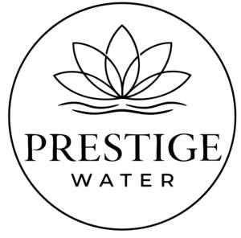

Trade Mark Journal No.2026/011 13 March 2026
UK00004345855 26 February 2026 (11)

- Class 11
- Irrigation sprinklers; Drip irrigation emitters [irrigation fittings]; Sprinkler machines for agricultural irrigation; Drip irrigation systems; Sprinkler systems for irrigation; Apparatus for fertilizer irrigation; Sprinkler machines for horticultural irrigation; Sprinkler systems for lawn irrigation; Sprinkler apparatus [automatic] for agricultural irrigation; Agricultural irrigation units; Decorative fountains, sprinkler and irrigation systems; Water cisterns; Sprinkler apparatus [automatic] for horticultural irrigation; Irrigation spray nozzles; Irrigation apparatus for horticultural use; Automatic watering installations for use in agriculture; Sprinkler installations [automatic] for agricultural purposes; Water control valves for water cisterns; Watering machines for agricultural purposes; Water filters [installations] for agricultural purposes; Water desalination plants; Water filters [machines] for agricultural purposes; Sprinklers [automatic installations] for watering flowers and plants; Automatic watering installations for use in gardening; Sprayers [automatic installations] for watering; Automatic watering installations for cattle; Water purification, desalination and conditioning installations; Sprinkler installations [automatic] for horticultural purposes; Gravimetric dry flow feeders for water treatment; Sanitary installations, water supply and sanitation equipment; Water treatment apparatus for water purification; Automatic watering apparatus for livestock; Water-saving aerators for faucets; Spray installations for the automatic watering of fields; Industrial waste water purification plants; Water filtration installations; Automatic watering installations for plants; Sanitary drain armatures for drip pipelines; Water treatment units for aerating and circulating water; Garden sprinklers [automatic]; Pressurised water reservoirs; Hydrants for water supply; Water control valves [level controlling] in cisterns; Drinking water supply installations.
Junaid Patel